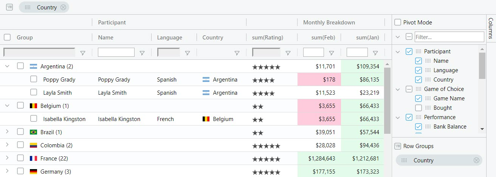

ag-Grid is a fully-featured and highly customizable JavaScript data grid. It delivers outstanding performance, has no 3rd party dependencies and integrates smoothly with all major JavaScript frameworks. Here's how our grid looks like with multiple filters and grouping enabled:

Besides the standard set of features you'd expect from any grid:
Here are some of the features that make ag-Grid stand out:
* The features marked with an asterisk are available in the enterprise version only.
Check out developers documentation for a complete list of features or visit our official docs for tutorials and feature demos.
$ npm i --save ag-grid
<div id="myGrid" style="height: 150px;width: 600px" class="ag-theme-balham"></div>
import {Grid} from "ag-grid-community";
import "ag-grid-community/dist/styles/ag-grid.css";
import "ag-grid-community/dist/styles/ag-theme-balham.css";
const gridOptions = {
columnDefs: [
{headerName: 'Make', field: 'make'},
{headerName: 'Model', field: 'model'},
{headerName: 'Price', field: 'price'}
],
rowData: [
{make: 'Toyota', model: 'Celica', price: 35000},
{make: 'Ford', model: 'Mondeo', price: 32000},
{make: 'Porsche', model: 'Boxter', price: 72000}
]
};
let eGridDiv = document.querySelector('#myGrid');
new Grid(eGridDiv, this.gridOptions);
For more information on how to integrate the grid into your project see TypeScript - Building with Webpack 2.
If you have found a bug, please report them at this repository issues section. If you're using Enterprise version please use the private ticketing system to do that. For more information on support check out our dedicated page.
Look for similar problems on StackOverflow using the ag-grid tag. If nothing seems related, post a new message there. Do not use GitHub issues to ask questions.
ag-Grid is developed by a team of co-located developers in London. If you want to join the team check out our jobs listing or send your application to info@ag-grid.com.
This project is licensed under the MIT license. See the LICENSE file for more info.